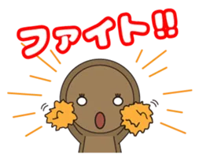
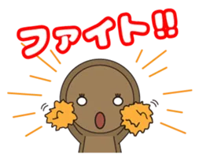
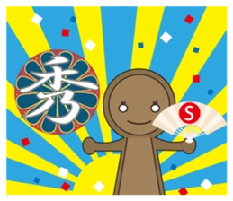
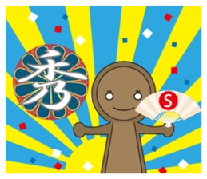

キャラクター
古墳マン

工大祭の公式マスコットキャラクター「落単古墳マン」
今年も工大祭に遊びに来るよ!
名古屋工業大学にある一本松古墳をモチーフにしたマスコットキャラクター!
生年月日は一本松古墳が出来た5世紀後半頃
毎年単位を落として留年している古墳マン!
数学が得意な古墳マンが、唯一取れている単位は線形代数Ⅰだけ!
名工大の一本松古墳に登ると落単するという噂から、「落単古墳マン」が誕生したよ!

名古屋工業大学の一本松古墳の中ではにわ君たちと一緒に暮らしてるんだ～
いつも寝てばっかりの僕と違ってはにわ君たちはちゃんと授業に出て充実した名工LIFEを送っているんだ...
寝てばっかりのせいなのかわからないけど僕は今年も単位が足りなくて卒業できないみたい...
他の大学に編入しようかな...
でもそのおかげで今年も工大祭に参加できるんだ!
今年も盛り上げていくよ～!
ハニワくん
工大祭の公式マスコットキャラクター「ハニワくん」
(おそらく)第55回工大祭で誕生した落単古墳マンと同じく、名古屋工業大学にある一本松古墳をモチーフにしたマスコットキャラクター!
古墳マンと同期であり、生年月日は5世紀後半頃
ハニワくんはとても頭が良く、古墳マンに勉強も教えているが、「ハニハニ」しか話せないので、英語の授業だけ落単している。

たまごちゃん
工大祭の公式マスコットキャラクター「2号館たまごちゃん」
今年も2号館前に出現するかも!?
第59回工大祭で誕生したマスコットキャラクター!
名古屋工業大学御器所キャンパスの2号館は鏡張りになっていて、鏡張りの下を歩くと直射日光と鏡の反射が暑すぎて、夏には目玉焼きができるという噂が言霊になった妖精「2号館たまごちゃん」。
真夏に二号館の下を歩いていたら頭の生卵が目玉焼きになってしまったことが原因で卵の妖精仲間からはぶられてしまい、一人寂しく二号館の下に暮らす女の子。
手先が器用なので指がなく不器用な古墳マンの補佐をしている。
身長7m。
LINEスタンプ
落単古墳マンのスタンプが発売中!!
日常でも使いやすいスタンプが勢ぞろい!
みんなもぜひ買って友達に送ってみてね!!
 

 
